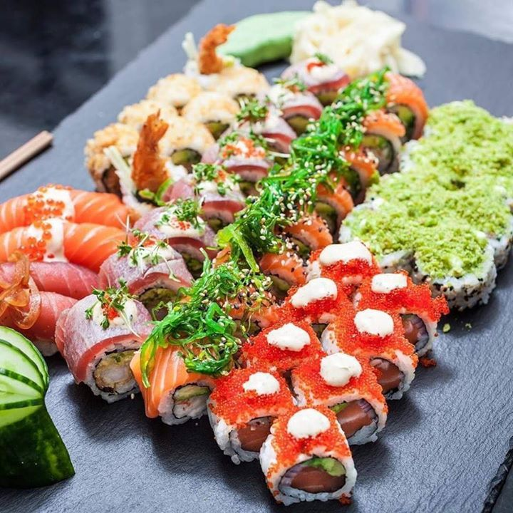
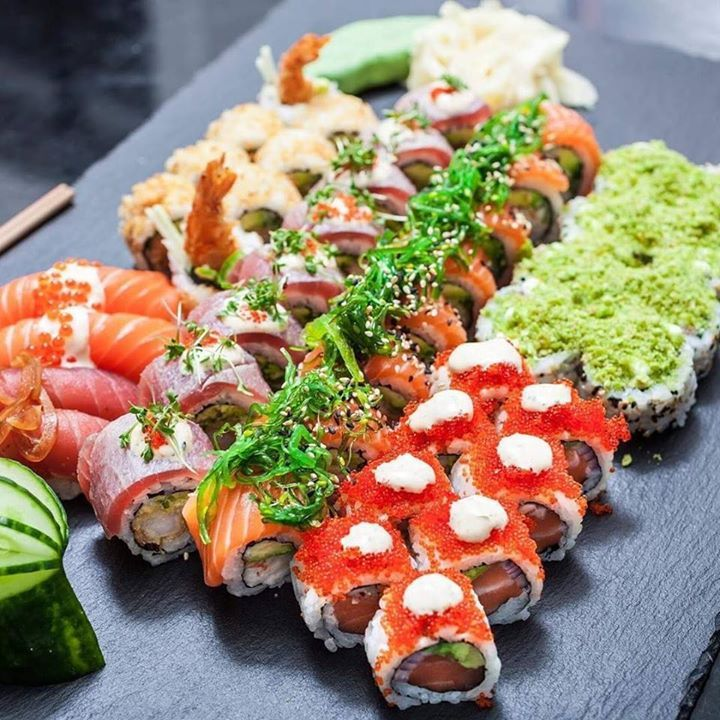
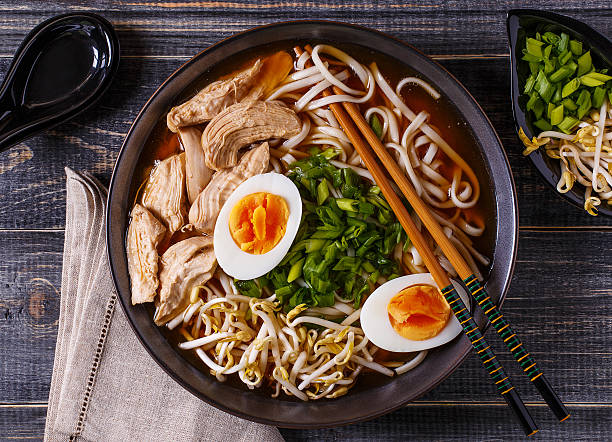
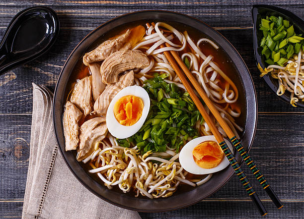
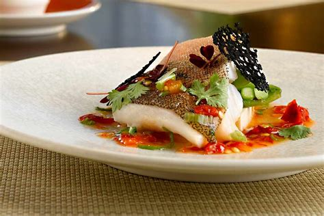
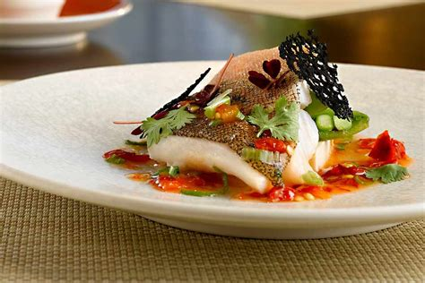

Sushi
Sushi (寿司 or 鮨) is the most famous Japanese dish outside of Japan, and one of the most popular dishes among the Japanese themselves. In Japan, sushi is usually enjoyed on special occasions, such as a celebration.
During the Edo period, "sushi" refered to pickled fish preserved in vinegar. Nowadays sushi can be defined as a dish containing rice which has been prepared with sushi vinegar.
 

Street Food
There are lots and lots of casual dining restaurants of all types found across Tokyo. While restaurants are easy to find just about anywhere in the city, good places to go for a large variety of them are around train stations, entertainment districts and the restaurant floors of most department stores, where there is usually a good selection of restaurants ranging from Japanese cuisine to international dining.
Izakaya are the most common type of casual dining establishments and are good places to try a variety of Japanese foods. They can be found in droves around train stations and entertainment districts, and serve popular food items such as yakitori, sashimi and of course beer. The following are a few casual dining areas around Tokyo that are well known for their atmosphere:

 

Fine Dining
Tokyo is well known for its fine dining, and has the highest number of Michelin-starred restaurants of any city in the world. Fine dining restaurants are often found on the top floors of skyscrapers and major hotels, and the cuisine served at these restaurants ranges from traditional Japanese to international and fusion fare.
Of course, they tend to be priced accordingly, and some restaurants may require advance reservations. The following are a few districts that are known for their fine dining establishments.
 
